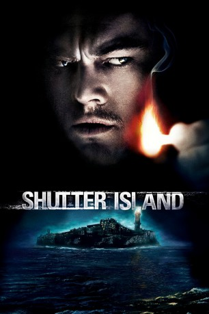
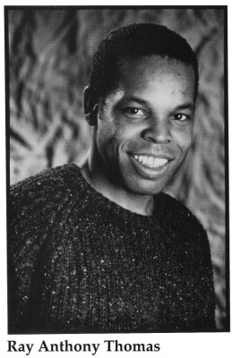

#17 Shutter Island
 
 IMDB-Wertung: 8.1 / 10
IMDB-Wertung: 8.1 / 10  IMDB-TOP-Platzierung: 171
IMDB-TOP-Platzierung: 171  Metascore: 63
Metascore: 63 
1954 soll der U.S. Marshall Teddy Daniels das Verschwinden eines Patienten aus dem Bostoner Shutter Island Ashecliffe Hospital aufklären. Er hat sich aus persönlichen Gründen um diesen Auftrag bemüht, aber schon bald muss er sich fragen, ob er nicht durch die Ärzte manipuliert wurde, deren Methoden von unethisch über illegal bis skrupellos gehen. Teddys scharfsinnige Ermittlungsmethoden führen rasch zu einer vielversprechenden Spur, aber das Hospital verweigert ihm Zugriff auf Informationen, die den Fall erhellen könnten. Als ein Hurrikan die Verbindung zum Festland unterbricht, "entkommen" weitere gefährliche Kriminelle in dem Chaos und die verwirrenden Hinweise mehren sich, so dass Teddy an allem zu zweifeln beginnt - seinem Gedächtnis, seinem Partner und sogar seinem eigenen Verstand.
Jahr: 2010
Dauer: 138 Minuten
FSK: 16
Land: USA Studio: Paramount PicturesTonspuren: DTS - ,
Untertitel: Deutsch,
Auflösung: 1080p (1920x816) Größe: 8386 MB
Genre: Mystery, Thriller
Regisseur:  Martin Scorsese
Martin Scorsese
Drehbuch: Laeta Kalogridis, Dennis Lehane
Soundtrack:
Darsteller:
 Leonardo DiCaprio als Teddy Daniels
Leonardo DiCaprio als Teddy Daniels Mark Ruffalo als Chuck Aule
Mark Ruffalo als Chuck Aule Ben Kingsley als Dr. Cawley
Ben Kingsley als Dr. Cawley Max von Sydow als Dr. Naehring
Max von Sydow als Dr. Naehring Michelle Williams als Dolores
Michelle Williams als Dolores Emily Mortimer als Rachel 1
Emily Mortimer als Rachel 1 Patricia Clarkson als Rachel 2
Patricia Clarkson als Rachel 2 Jackie Earle Haley als George Noyce
Jackie Earle Haley als George Noyce Ted Levine als Warden
Ted Levine als Warden John Carroll Lynch als Deputy Warden McPherson
John Carroll Lynch als Deputy Warden McPherson Elias Koteas als Laeddis
Elias Koteas als Laeddis- Robin Bartlett als Bridget Kearns
- Christopher Denham als Peter Breene
- Nellie Sciutto als Nurse Marino
- Joseph Sikora als Glen Miga
 Curtiss Cook als Trey Washington
Curtiss Cook als Trey Washington-  Raymond Anthony Thomas als Orderly Ganton
 Joseph McKenna als Inmate Billings
Joseph McKenna als Inmate Billings- Ruby Jerins als Little Girl
 Tom Kemp als Ward C Guard
Tom Kemp als Ward C Guard Bates Wilder als Ward C Guard
Bates Wilder als Ward C Guard- Lars Gerhard als Dying Commandant
 Matthew Cowles als Ferry Captain
Matthew Cowles als Ferry Captain- Jill Larson als Manacled Woman
- Dennis Lynch als Red-Haired Man
- Drew Beasley als Younger Boy
- Ken Cheeseman als Doctor
 Steve Witting als Doctor
Steve Witting als Doctor- Michael Byron als McPherson's Driver
 Gary Galone als Gate Guard
Gary Galone als Gate Guard- Gabriel Hansen als Young Guard
- Stephen Adler als German Guard , uncredited
 Brina als Patient , uncredited
Brina als Patient , uncredited Jeffrey Corazzini als Boardroom Guard , uncredited
Jeffrey Corazzini als Boardroom Guard , uncredited John Franchi als Criminally Insane Inmate , uncredited
John Franchi als Criminally Insane Inmate , uncredited- Guy A. Grundy als Head Security Guard , uncredited
- Cody Harter als U.S. GI / Shooter , uncredited
- Mackenzie Hawe als Child in Street , uncredited
- J Parker Kent als Hospital Guard , uncredited
- Mary Koomjian als Psychiatric Patient , uncredited
 Dan Marshall als U.S. G.I. at Dachau Liberation / German S.S. Officer Killed , uncredited
Dan Marshall als U.S. G.I. at Dachau Liberation / German S.S. Officer Killed , uncredited Americo Presciutti als Security Guard , uncredited
Americo Presciutti als Security Guard , uncredited- Eric Rollins als Orderly Chopping Wood , uncredited
- Skip Shea als Male Patient , uncredited
- Billy Silvia als Prison Guard , uncredited
- Franz Strassmann als Lt. Heinrich Wicker , uncredited
- Ziad Akl als Tattoo'd Man
- John Porell als Wild-Eyed Man
- Aidan Cole mitchell als Younger Boy
- Joseph P. Reidy als Operator
Datei: X:\2010(N-Z)\Shutter Island (2010, FSK16, 1920x816).mkv seit 15.01.2015
Festplatte: HD 2010(G-Z)-2011(A-F)
 Es gibt insgesamt 115 Filme in der Gruppe '2010(N-Z)'
Es gibt insgesamt 115 Filme in der Gruppe '2010(N-Z)'